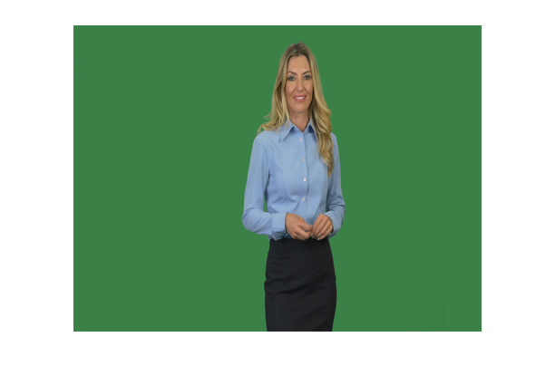
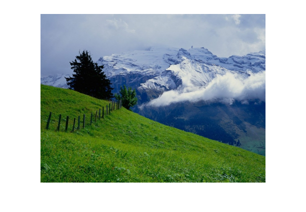
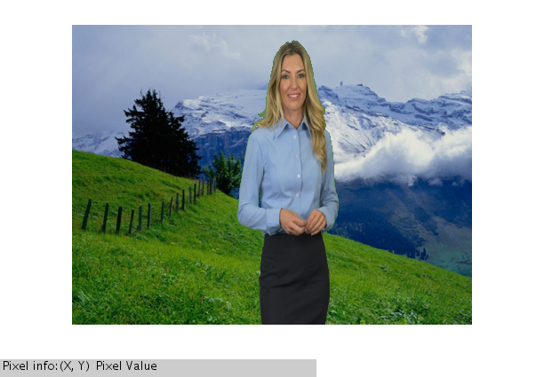

Contents
close all;
clear all;
Reading original image and background image
myimg=imread('sample.jpg');
back=imread('back.jpg');
Resizing Images
sz=size(back);
myimg=imresize(myimg,[sz(1),sz(2)]);
myimg=imresize(myimg,0.5);
back=imresize(back,0.5);
figure();
imshow(myimg);
figure();
imshow(back);
 
convering RGB to HSV
hsv = rgb2hsv(myimg);
hsv_back=rgb2hsv(back);
Getting HSV Parameters
h_back =hsv_back(:, :, 1);
s_back = hsv_back(:, :, 2);
v_back = hsv_back(:, :, 3);
h = hsv(:, :, 1);
s = hsv(:, :, 2);
v = hsv(:, :, 3);
[ rows cols]= size(h);
for i=1:rows
for j=1:cols
if(h(i,j)>=0.35 && h(i,j)<=0.37)
h(i,j)=h_back(i,j);
s(i,j)=s_back(i,j);
v(i,j)=v_back(i,j);
end
end
end
tmp = cat(3,h,s,v);
out=hsv2rgb(tmp);
Displaying Final image
figure();
imshow(out);
impixelinfo;
